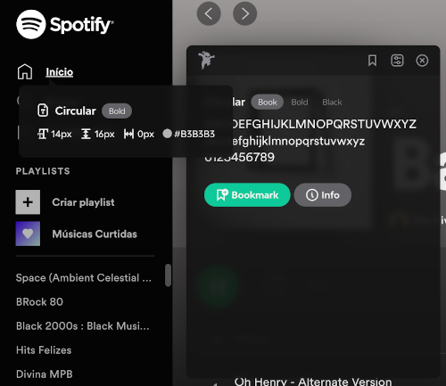

Fonts Ninja
- acesse a Chromw Web Store e adicione ao seu Chrome gratuitamente a extensão Fonts Ninja
- com o Fonts Ninja já adicionado e ativado no seu Chrome, acesse qualquer site e clique no ícone da extensão
- pronto! pode passar o mouse sobre qualquer texto na página da web que estiver aberta que o Fonts Ninja irá informar a fonte sendo utilizada, tamanho, estilo e peso.

Voltar à página anterior.
Voltar à página inicial.